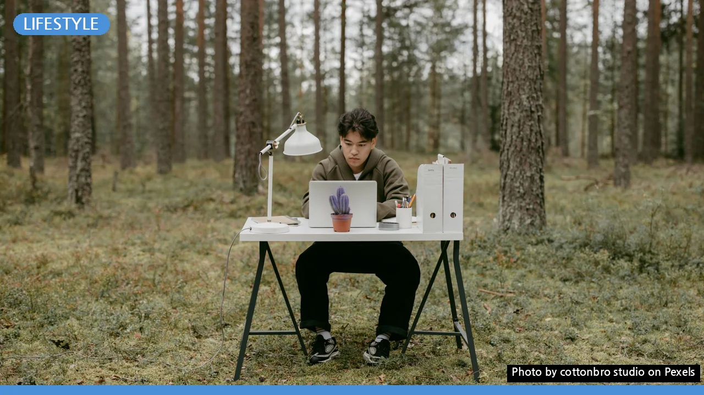
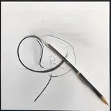

산사 워케이션 와이파이 속도는? 실제 후기로 본 집중도와 필수 준비물
사진: cottonbro studio / Pexels (무료 이미지, 출처 표기)
산사 워케이션, 와이파이 속도 정말 업무가 가능한 수준일까?
조용한 산사에서 맑은 공기를 마시며 일하는 '산사 워케이션'을 꿈꾸지만, 당장 내일 있을 화상 회의나 대용량 파일 전송이 막힐까 봐 망설여지시나요? 산속에 있는 사찰 특성상 인터넷 끊김 현상을 우려하는 것은 당연합니다.
한국불교문화사업단이 지정한 워케이션 전문 사찰들의 경우, 대부분 사무 공간이나 숙소(요사채: 스님들이 거주하거나 참선하는 방 외에 일반인이 머무는 방)에 전용 와이파이(Wi-Fi) 망을 구축해 두고 있습니다. 실제 이용자들의 후기를 종합하면, 평균 와이파이 다운로드 속도는 30Mbps에서 70Mbps 사이로 측정됩니다. 이는 줌(Zoom)을 활용한 화상 회의나 FHD급 영상 스트리밍, 이메일 송수신을 처리하기에 무리가 없는 속도입니다.
다만, 사찰의 중심부와 멀리 떨어진 외딴 방이거나 수령이 오래된 목조 건물 깊숙한 곳에서는 신호가 약해질 수 있습니다. 대용량 소스 코드를 빌드하거나 기가바이트(GB) 단위의 영상 편집본을 수시로 업로드해야 하는 직군이라면, 스마트폰 핫스팟이나 LTE 라우터(에그)를 보조 통신 수단으로 지참하는 편이 안전합니다.
업무 집중도를 좌우하는 산사의 진짜 환경 (책상, 콘센트, 소음)
노트북을 켤 수 있다고 해서 무조건 집중이 잘되는 것은 아닙니다. 산사 워케이션을 다녀온 직장인들이 공통으로 지적하는 의외의 복병은 '좌식 생활'입니다. 대부분의 사찰 방사는 온돌방 구조로 되어 있어, 등받이 없는 좌식 의자나 낮은 찻상에서 일해야 하는 경우가 많습니다. 평소 모니터 암과 허리 지원 의자에 익숙한 허리 건강에는 다소 부담이 될 수 있습니다.
또한, 고풍스러운 목조 건물 내부에는 콘센트 개수가 부족한 경우가 흔합니다. 벽면에 콘센트가 단 한 개만 있어 노트북, 스마트폰, 태블릿을 동시에 충전하기 난감할 때가 있습니다. 소음 면에서는 도심의 경적이나 기계음 대신 새소리와 풍경 소리가 귀를 채워주어 심리적 안정감을 주지만, 새벽 4시경 시작되는 새벽 예불 종소리나 주말 낮 시간대 단체 관광객의 말소리는 일시적인 집중 방해 요소가 될 수 있습니다.
일반 공유오피스 vs 산사 워케이션 환경 비교
내가 하려는 업무의 성격이 산사 환경과 맞는지 아래 비교표를 통해 점검해 보세요.
* 본 비교는 일반적인 사찰 워케이션 환경을 기준으로 작성되었으며, 사찰별 시설 리모델링 여부에 따라 상이할 수 있습니다.
산사 워케이션 실패를 막는 필수 준비물 4가지
도심을 떠나 깊은 산속으로 들어가는 만큼, 현지에서 구하기 어려운 물품은 미리 챙겨야 업무 흐름이 끊기지 않습니다. 후기에서 가장 만족도가 높았던 필수 준비물 목록입니다.
- 접이식 노트북 거치대 & 키보드: 좌식 테이블에서 일할 때 고개를 숙이는 각도를 줄여주어 목과 어깨의 피로를 크게 덜어줍니다.
- 길이 3m 이상의 멀티탭: 콘센트 위치가 이부자리나 책상과 멀리 떨어져 있는 경우가 많으므로 긴 멀티탭은 필수입니다.
- 노이즈 캔슬링 이어폰: 사찰 내 잔잔한 소음이나 예불 시간에 온전히 나만의 공간에 몰입하기 위해 유용합니다.
- 개인 텀블러와 드립백 커피: 사찰 내에서는 믹스커피나 전통차 외에 에스프레소 기반 커피를 구하기 어렵습니다. 카페인 수급이 중요한 분들은 미리 챙기세요.
예약 전 반드시 확인해야 할 체크리스트
성공적인 산사 워케이션을 위해서는 예약 단계에서 사찰 측에 몇 가지 사항을 미리 문의하는 것이 좋습니다. 사찰 템플스테이 공식 홈페이지나 고객센터를 통해 아래 세 가지를 확인해 보세요.
첫째, 방사에 개별 콘센트와 와이파이 공유기가 설치되어 있는지 확인해야 합니다. 공용 공간에서만 인터넷이 가능한 사찰도 있기 때문입니다. 둘째, 좌식이 불편한 이용객을 위한 입식 책상 방사가 마련되어 있는지 물어보세요. 최근 워케이션 트렌드에 맞춰 일부 방을 입식으로 개조한 사찰들이 늘고 있습니다. 마지막으로, 일과 시간 중 사찰 행사나 공양(식사) 시간 등의 일정 제약이 업무 시간과 충돌하지 않는지 조율이 필요합니다.
2026년 기준, 전국 수십 여 곳의 사찰이 직장인 맞춤형 워케이션 프로그램을 별도로 운영하고 있습니다. 사찰마다 와이파이 품질과 방 내부 시설의 편차 조율이 상이하므로, 구체적인 이용 수칙과 인프라 현황은 예약 전 해당 사찰의 공식 템플스테이 사무국을 통해 다시 한번 크로스체크하시기를 권장합니다.
🔗 이 글도 함께 보면 좋아요: 스마트폰 중독 탈출: 실패 없는 디지털 디톡스 4단계 가이드
관련 추천 상품
이 포스팅은 쿠팡 파트너스 활동의 일환으로, 이에 따른 일정액의 수수료를 제공받습니다.
자주 묻는 질문(FAQ) (탭하면 펼쳐져요)
Q1. 산사 워케이션 중 줌(Zoom) 화상 회의가 가능한가요?
A. 네, 대부분의 워케이션 특화 사찰은 30~70Mbps 수준의 와이파이를 제공하므로 화상 회의를 진행하는 데 무리가 없습니다. 다만 신호가 불안정할 때를 대비해 스마트폰 테더링(핫스팟)을 켤 수 있도록 준비하는 것이 안전합니다.
Q2. 허리가 아픈데 입식 책상이 있는 사찰도 있나요?
A. 최근 워케이션 수요가 늘어나면서 일부 사찰에서는 입식 책상과 의자를 갖춘 방사를 별도로 운영하고 있습니다. 예약 전 사찰 사무국에 입식 방사 배정이 가능한지 미리 문의하시는 것을 권장합니다.
Q3. 사찰 일정(예불, 공양 등)에 무조건 참여해야 하나요?
A. 휴식형 템플스테이나 워케이션 프로그램의 경우, 식사(공양) 시간을 제외한 예불이나 108배 등의 일정은 자율 참여인 경우가 대부분입니다. 온전히 개인 업무 시간에 집중할 수 있습니다.
한눈에 보는 상품 목록

휴대용 접이식 노트북 거치대
산사의 낮은 좌식 테이블 환경에서 목과 허리의 부담을 줄여주는 각도 조절형 알루미늄 거치대입니다.
개별 스위치 4구 멀티탭 3m
콘센트 개수가 적고 위치가 먼 사찰 방사에서 노트북과 스마트 기기를 여유롭게 충전할 수 있는 필수 아이템입니다.